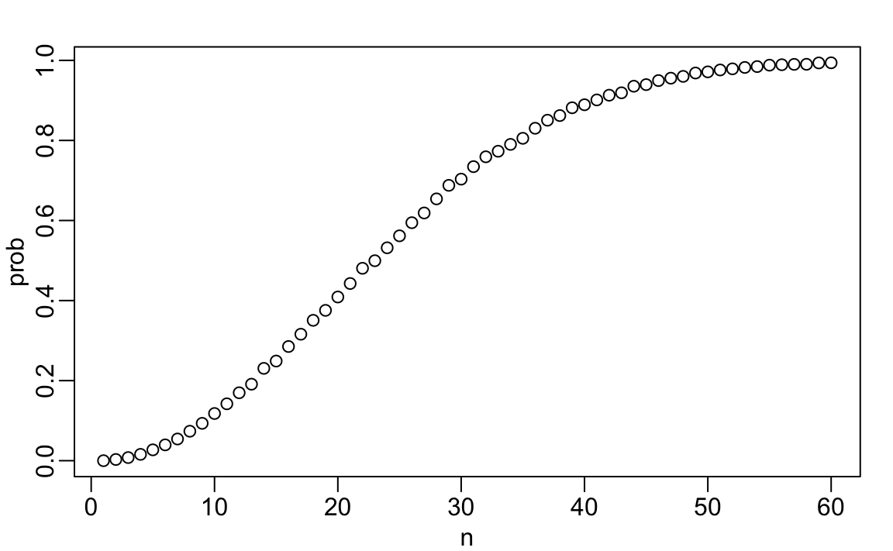
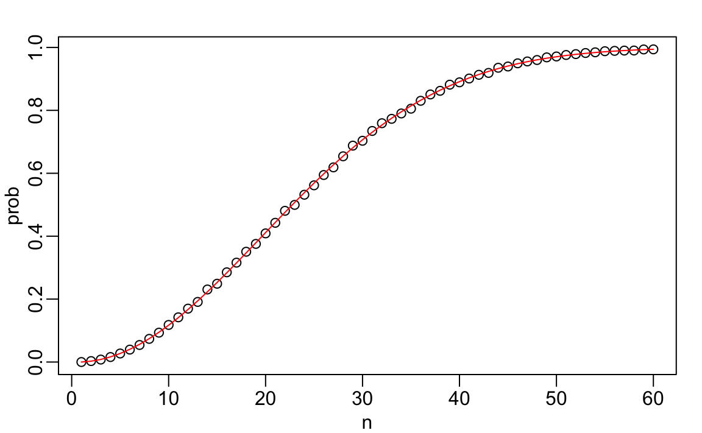
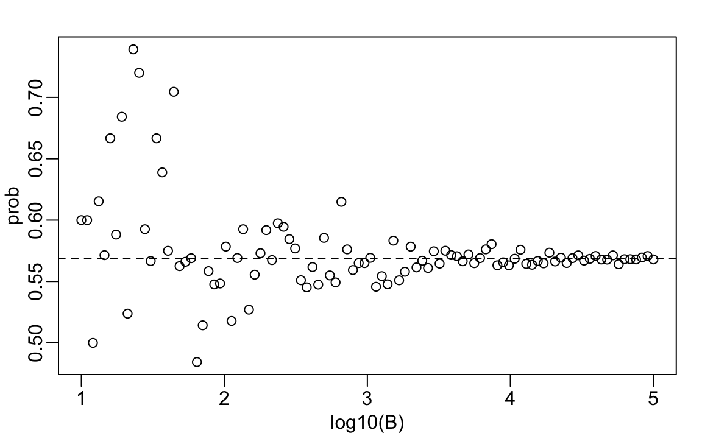

5 Discrete Probability
We begin by covering some basic principles related to categorical data. The specific area of probability which deals with categorical data is referred to as discrete probability. Understanding this topic, will help us comprehend the probability theory we will later introduce for numeric and continuous data, which is much more common in data analysis. Since discrete probability is invaluable in card games, we will use these as illustrative examples.
5.1 Relative frequency
The term probability is used in everyday language. Yet answering questions about probability is often hard, if not impossible. In this section, we discuss a mathematical definition of probability that allows us to give precise answers to certain questions.
For example, if I have 2 red beads and 3 blue beads inside an urn1 (most probability books use this archaic term, so we do too) and I pick one at random, what is the probability of picking a red one? Our intuition tells us that the answer is 2/5 or 40%. A precise definition can be given by noting that there are five possible outcomes, of which two satisfy the condition necessary for the event “pick a red bead”. Since each of the five outcomes has an equal chance of occurring, we conclude that the probability is .4 for red and .6 for blue.
A more intuitive way to think about the probability of an event is as the long-run proportion of times the event occurs when an experiment is repeated independently and under identical conditions, an infinite number of times. This interpretation naturally leads to one of the most powerful techniques in data science—Monte Carlo simulations, which we will explore later in this chapter.
5.2 Probability distributions
Probability distributions are the foundation of most statistical models. They describe how likely different outcomes are, providing a mathematical summary of uncertainty. Every model we use in data analysis, from simple polling examples to complex multivariate models, is built on assumptions about underlying probability distributions. As we move to continuous and multidimensional settings, these distributions become more complex and abstract. For discrete cases, however, the idea is quite intuitive: each possible outcome, or category, is assigned a probability based on its relative frequency.
If we know the relative frequency of the different categories, defining a distribution for categorical outcomes is relatively straightforward. We simply assign a probability to each category. In cases analogous to beads in an urn, for each bead type, their proportion defines the distribution.
For example, if we are randomly calling likely voters from a population that is 44% Democrat, 44% Republican, 10% Undecided, and 2% Green Party, these proportions define the probability for each group in any given call. The probability distribution for each call is defined by four numbers: Pr(calling a Republican) = 0.44, Pr(calling a Democrat) = 0.44, Pr(callin an Undecided) = 10%, and Pr(calling a Green) = 0.02.
5.3 Monte Carlo
Computers provide a way to actually perform the simple random long-run experiment described above: pick a bead at random from a bag that contains three blue beads and two red ones. Random number generators permit us to mimic the process of picking at random.
An example is the sample function in R. We demonstrate its use in the code below. First, we use the function rep to generate the urn:
and then use sample to pick a bead at random:
sample(beads, 1)
#> [1] "blue"This line of code produces a single random outcome. We want to repeat this experiment an infinite number of times, but it is impossible to repeat indefinitely. Instead, we repeat the experiment a large enough number of times to make the results practically equivalent to repeating indefinitely. This is an example of a Monte Carlo simulation.
Much of what mathematical and theoretical statisticians study, topics that we do not cover in this book, relates to providing rigorous definitions of “practically equivalent”. Additionally, they explore how close a large number of experiments brings us to what happens in the limit. Later in this chapter, we provide a practical approach to determining what is “large enough”.
To perform our first Monte Carlo simulation, we use the replicate function, which allows us to repeat the same task any number of times. Here, we repeat the random event 10,000 times:
Here we use the replicate function for educational purposes, but there is a faster way to generate this simulation using:
sample(beads, 10000, replace = TRUE)which we explain in the following section.
We can now verify if our definition actually is in agreement with this Monte Carlo simulation approximation. We use table to count the outcomes and and prop.table gives us the proportions:
prop.table(table(events))
#> events
#> blue red
#> 0.601 0.399The numbers above represent the estimated probabilities obtained by this Monte Carlo simulation. Statistical theory tells us that as \(B\) gets larger, the estimates get closer to 3/5=.6 and 2/5=.4.
This is a simple and not very useful example, since we can easily compute the probabilities mathematically. Monte Carlo simulations are useful when it is hard, or impossible, to compute the exact probabilities mathematically. Before delving into more complex examples, we use simple ones to demonstrate the computing tools available in R.
Setting the random seed
Before we continue, we will briefly explain the following important line of code:
set.seed(1986) Throughout this book, we use random number generators. This implies that many of the results presented can potentially change by chance, indicating that a static version of the book may show a different result than what you obtain when following the code as presented. This is actually fine, given that the results are random and change by chance. However, if you want to ensure that results are consistent with each run, you can set R’s random number generation seed to a specific number. Above we set it to 1986. We want to avoid using the same seed every time and we used a popular way to pick the seed which is year - month - day. For example, we chose 1986 on December 20, 2018: \(2018 - 12 - 20 = 1986\).
You can learn more about setting the seed by looking at the documentation:
?set.seedIn the exercises, we may ask you to set the seed to assure that the results you obtain are exactly what we expect them to be.
With and without replacement
The function sample has an argument that allows us to pick more than one element from the urn. However, by default, this selection occurs without replacement: after a bead is selected, it is not returned to the bag. Notice what happens when we ask to randomly select five beads:
This results in rearrangements that consistently comprise three blue and two red beads. If we ask that six beads be selected, we get an error.
However, the sample function can therefore be used directly, without the use of replicate, to repeat the same experiment of picking 1 out of the 5 beads, continually, under the same conditions. To do this, we sample with replacement: return the bead back to the urn after selecting it. We can tell sample to do this by changing the replace argument, which defaults to FALSE, to replace = TRUE:
events <- sample(beads, 10000, replace = TRUE)5.4 Combinations and permutations
Most university-level statistics courses begin with combinatorics, which provides the foundation for many probability calculations. These techniques let us count the number of outcomes that satisfy a condition, typically by computing the number of permutations (when order matters) or combinations (when order does not matter).
To make these ideas concrete, let’s consider a familiar setting: card games. Suppose we want to understand the probability of drawing specific hands from a deck. This example helps demonstrate how combinatorics works and how we can use R to perform these calculations.
First, let’s build a deck of cards:
numbers <- c("Ace", "Deuce", "Three", "Four", "Five", "Six", "Seven",
"Eight", "Nine", "Ten", "Jack", "Queen", "King")
suits <- c("Diamonds", "Clubs", "Hearts", "Spades")
deck <- expand.grid(number = numbers, suit = suits)
deck <- paste(deck$number, deck$suit)If we draw one card at random, the probability of getting a King is 1/13:
Now let’s introduce two key functions: permutations() and combinations() from the gtools package. These let us enumerate all possible selections from a list, depending on whether order matters.
For example:
library(gtools)
permutations(3, 2)
#> [,1] [,2]
#> [1,] 1 2
#> [2,] 1 3
#> [3,] 2 1
#> [4,] 2 3
#> [5,] 3 1
#> [6,] 3 2This lists all ordered pairs from the numbers 1, 2, and 3. Notice that (1,2) and (2,1) are treated as distinct. If order does not matter, we use combinations():
combinations(3, 2)
#> [,1] [,2]
#> [1,] 1 2
#> [2,] 1 3
#> [3,] 2 3Now (1,2) and (2,1) are treated as the same outcome.
Let’s use these tools to compute the probability of a Natural 21 in Blackjack, which occurs when a player’s first two cards are an Ace and a face card (Jack, Queen, King, or Ten). Since order does not matter, we use combinations():
aces <- paste("Ace", suits)
facecard <- expand.grid(number = c("King", "Queen", "Jack", "Ten"), suit = suits)
facecard <- paste(facecard$number, facecard$suit)
hands <- combinations(52, 2, v = deck)
mean((hands[,1] %in% aces & hands[,2] %in% facecard) |
(hands[,2] %in% aces & hands[,1] %in% facecard))
#> [1] 0.0483Monte Carlo approach
We can obtain the same result through simulation. Instead of enumerating all combinations, we repeatedly draw two cards from the deck and check whether we have a Natural 21. This is a Monte Carlo approximation to the same probability.
Both approaches yield nearly the same result. The combinatoric functions give the exact probability, while the Monte Carlo simulation provides an approximation that converges to the same value as the number of repetitions increases.
5.5 Examples
In this section, we describe two discrete probability popular examples: the Monty Hall problem and the birthday problem. We use R to help illustrate the mathematical concepts.
Monty Hall problem
In the 1970s, there was a game show called “Let’s Make a Deal,” with Monty Hall as the host. At some point in the game, contestants were asked to pick one of three doors. Behind one door, there was a prize, while the other doors had a goat behind them to show the contestant had lost. After the contestant picked a door, before revealing whether the chosen door contained a prize, Monty Hall would open one of the two remaining doors and reveal to the contestant that there was no prize behind that door. Then, he would ask, “Do you want to switch doors?” What would you do?
We can use probability to demonstrate that if you stick with the original door choice, your chances of winning a prize remain 1 in 3. However, if you switch to the other door, your chances of winning double to 2 in 3! This might seem counterintuitive. Many people incorrectly think both chances are 1 in 2 since you are choosing between 2 options. You can watch a detailed mathematical explanation on Khan Academy2 or read one on Wikipedia3. Below, we use a Monte Carlo simulation to see which strategy is better. Note that this code is written longer than it should be for pedagogical purposes.
monty_hall <- function(strategy = c("stick", "switch")) {
strategy <- match.arg(strategy)
doors <- c("1", "2", "3")
prize_door <- sample(doors, 1)
my_pick <- sample(doors, 1)
show <- sample(setdiff(doors, c(my_pick, prize_door)), 1)
final_pick <- if (strategy == "stick") my_pick else
setdiff(doors, c(my_pick, show))
final_pick == prize_door
}
B <- 10000
mean(replicate(B, monty_hall("stick")))
#> [1] 0.326
mean(replicate(B, monty_hall("switch")))
#> [1] 0.669As we examine the code, we notice that the lines starting with my_pick and show do not affect the final outcome when we stick with our original choice. This confirms that our winning probability in that case is 1 in 3, as expected. When we switch, the Monte Carlo simulation verifies the 2/3 probability. This illustrates why switching improves our odds: the show line removes a door that is guaranteed not to be the winner, effectively transferring its probability to the remaining unopened door. Thus, unless our initial choice was correct, which happens only one-third of the time, we win by switching, which occurs two-thirds of the time.
Birthday problem
Suppose you are in a classroom with 50 people. If we assume this is a randomly selected group, what is the chance that at least two people have the same birthday? Although it is somewhat advanced, we can deduce this mathematically. We will do that later. Here, we use a Monte Carlo simulation. For simplicity, we assume nobody was born on February 29, which doesn’t significantly change the answer.
First, note that birthdays can be represented as numbers between 1 and 365, so a sample of 50 birthdays can be obtained as follows:
n <- 50
bdays <- sample(1:365, n, replace = TRUE)To check if there are at least two people with the same birthday in this particular set of 50 people, we can use the duplicated function, which returns TRUE whenever an element of a vector is a duplicate:
any(duplicated(bdays))
#> [1] TRUEIn this case, we see that it did happen; there were at least two people who had the same birthday.
To estimate the probability of a shared birthday in the group, we repeat this experiment by repeatedly sampling sets of 50 birthdays:
same_birthday <- function(n) any(duplicated(sample(1:365, n, replace = TRUE)))
results <- replicate(10000, same_birthday(50))
mean(results)
#> [1] 0.969People tend to underestimate these probabilities so let’s say we want to use this knowledge to make bet with friends about the likelihood of two people sharing the same birthday in a group. At what group size do the chances become greater than 50%? Greater than 75%?
Let’s create a look-up table. We can quickly create a function to compute this for any group size:
Using the function sapply, we can perform element-wise operations on any function:
We can now make a plot of the estimated probabilities of two people having the same birthday in a group of size \(n\):
plot(n, prob)
Now let’s compute the exact probabilities rather than relying on Monte Carlo approximations. Using math gives the precise answer and is much faster since we don’t need to simulate experiments. We apply a common probability trick: instead of finding the probability that at least two people share a birthday, we compute the probability that no one does. By the multiplication rule, person 1 can have any birthday, person 2 must choose from the remaining 364 out of 365 days, and so on, giving the probability that all \(n\) birthdays are unique as:
\[ 1 \times \frac{364}{365}\times\frac{363}{365} \dots \frac{365-n + 1}{365} \]
We can write a function that does this for any number:
exact_prob <- function(n) 1 - prod(seq(365, 365 - n + 1)/365)
eprob <- sapply(n, exact_prob)
plot(n, prob)
lines(n, eprob, col = "red")
This plot shows that the Monte Carlo simulation provided a very good estimate of the exact probability. Had we not been able to compute the exact probabilities, we could still accurately estimate them.
5.6 Infinity in practice
The theory described here requires repeating experiments over and over indefinitely. In practice, we can’t do this. In the examples above, we used \(B=10,000\) Monte Carlo experiments, yielding accurate estimates. The larger this number, the more accurate the estimate becomes, until the approximation is so good that your computer can’t tell the difference. However, in more complex calculations, 10,000 may not be nearly enough. Moreover, for some calculations, 10,000 experiments might not be computationally feasible.
In practical scenarios, we won’t know what the answer is beforehand, so we won’t know if our Monte Carlo estimate is accurate. We know that the larger the \(B\), the better the approximation. But how large do we need it to be? This is actually a challenging question, and answering it often requires advanced theoretical statistics training.
One practical approach is to check for the stability of the estimate. The following example illustrates the birthday problem for a group of 25 people.
B <- 10^seq(1, 5, len = 100)
compute_prob <- function(B, n = 25) mean(replicate(B, same_birthday(n)))
prob <- sapply(B, compute_prob)
plot(log10(B), prob)
In this plot, we can see that the values start to stabilize at around 1,000. Note that the exact probability, which is known in this case, is 0.5686997.
5.7 Exercises
1. A box contains 3 cyan balls, 5 magenta balls, and 7 yellow balls. One ball is drawn at random. Write a Monte Carlo simulation to estimate and confirm the probability that the ball drawn is cyan.
2. Do the same for the probability that the ball will not be cyan?
3. Instead of taking just one draw, consider taking two draws. You take the second draw without returning the first draw to the box. We call this sampling without replacement. Write a Monte Carlo simulation to estimate and confirm the probability of the first draw being cyan and the second draw not being cyan?
4. Now repeat the experiment, but this time, after taking the first draw and recording the color, return it to the box and shake the box. We call this sampling with replacement. Write a Monte Carlo simulation to estimate and confirm the probability of the first draw being cyan and the second draw not being cyan?
5. Let’s say you’ve drawn 5 balls from the box, with replacement, and all have been yellow. What is the probability that the next one will be yellow?
6. If you roll a 6-sided die six times, write a Monte Carlo simulation to estimate and confirm the probability of not seeing a 6?
7. Two teams, let’s say the Celtics and the Cavaliers, are playing a seven game series. The Cavaliers are a better team and have a 60% chance of winning each game. What is the probability that the Celtics will win at least one game?
8. Create a Monte Carlo simulation to confirm your answer to the previous problem. Use B <- 10000 simulations. Hint: use the following code to generate the results of the first four games:
The Celtics must win one of these 4 games.
9. Two teams, say the Cavaliers and the Warriors, are playing a seven game championship series. The first to win four games, therefore, wins the series. The teams are equally good so they each have a 50-50 chance of winning each game. If the Cavaliers lose the first game, what is the probability that they win the series?
10. Confirm the results of the previous question with a Monte Carlo simulation.
11. Two teams, \(A\) and \(B\), are playing a seven game series. Team \(A\) is better than team \(B\) and has a \(p>0.5\) chance of winning each game. Given a value \(p\), the probability of winning the series for the underdog team \(B\) can be computed with the following function based on a Monte Carlo simulation:
Use the function sapply to compute the probability, call it ws, of winning for p <- seq(0.5, 0.95, 0.025). Then plot the result.
12. Repeat the exercise above, but now keep the probability fixed at p <- 0.75 and compute the probability for different series lengths: best of 1 game, best of 3 games, best of 5 games, and so on. Specifically, ns <- seq(1, 25, 2). Hint: use the function below.